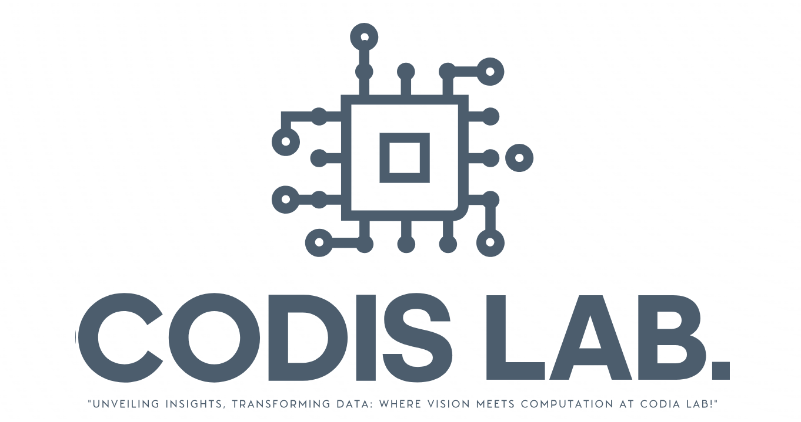

CoDIA stands for Computational Data and Image Science.
CoDIS Lab is the umbrella name, for my research, the areas of which span Statistical Signal/Image Processing, Environmental Remote Sensing, Sports Analytics, Data Science, Bayesian Data Analysis, Inverse problems, and Uncertainty Quantification.
The research under the CoDIS Lab consists of three main areas